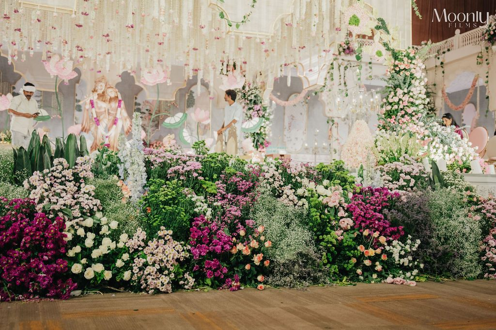

Celebrations with a story.
Explore our wedding designs, pre-wedding rituals and personal celebrations.
Spaces that feel like you
Heritage, romance and a world of possibilities. Explore the stories we bring to life.
Showing 9 of 9 celebrations

Let's tell your story.
A thoughtful celebration begins with a conversation.
Plan your celebration